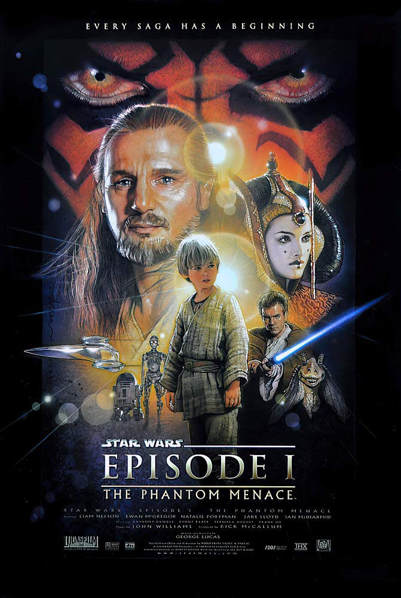
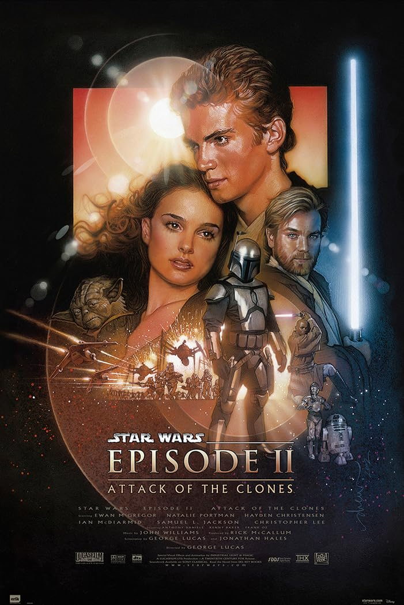
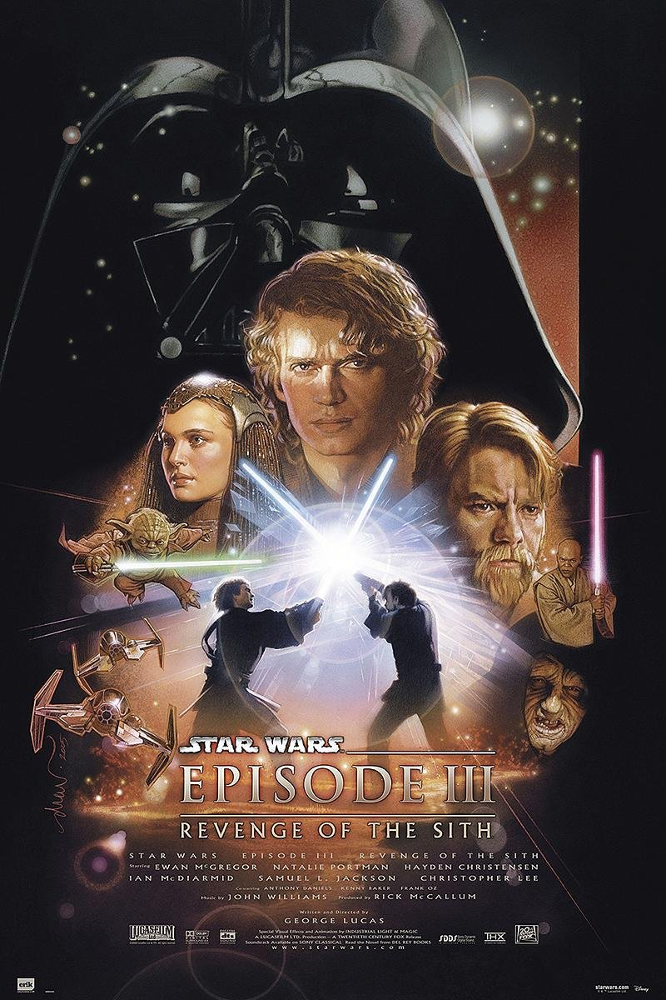
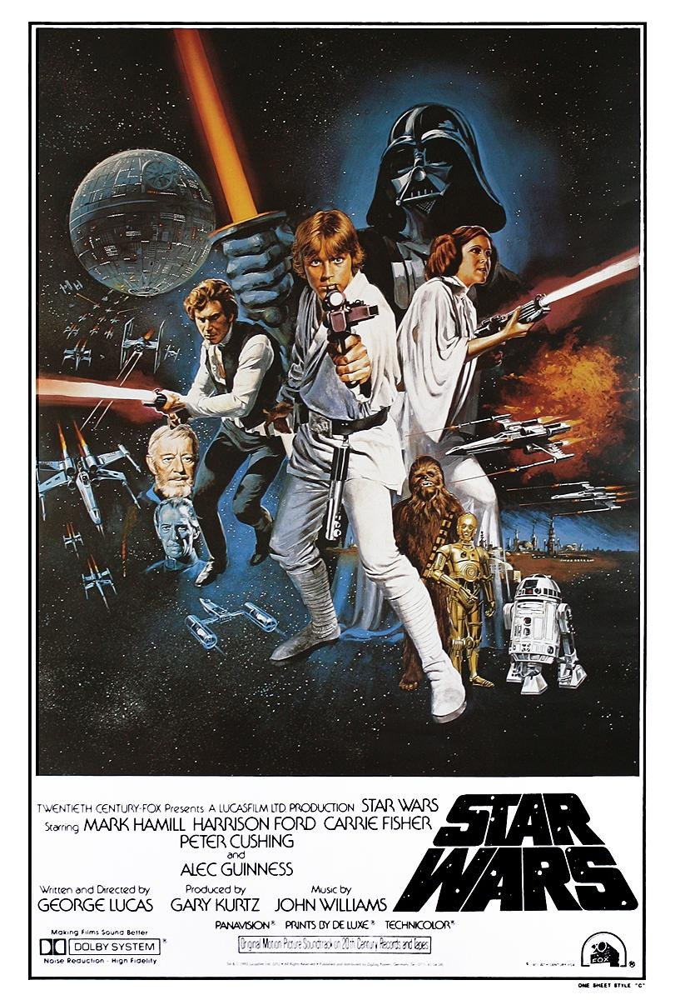
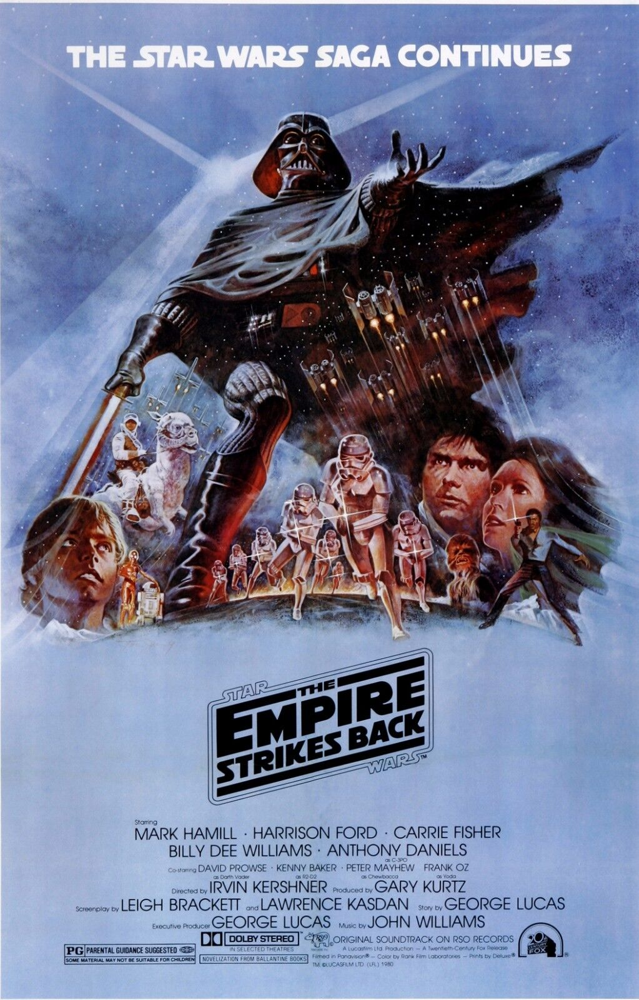
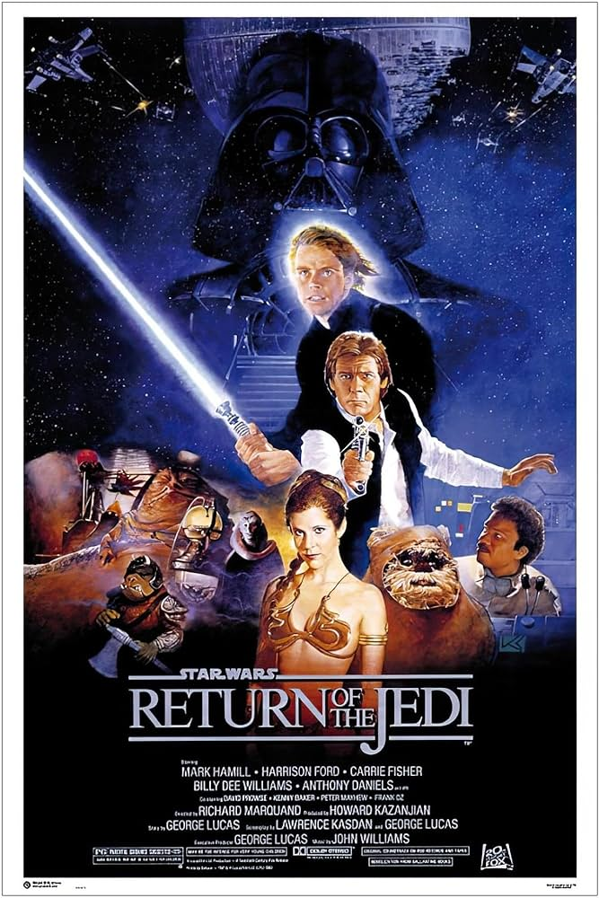
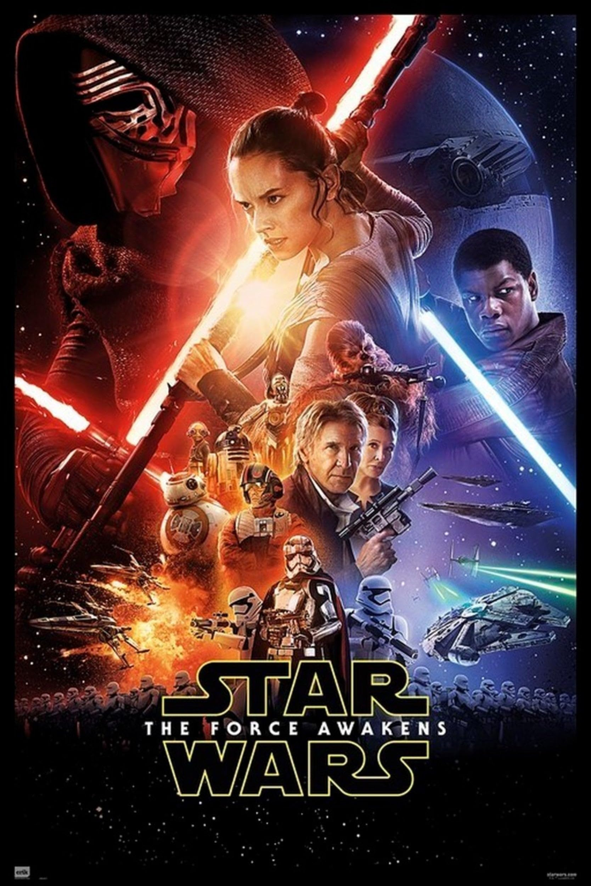
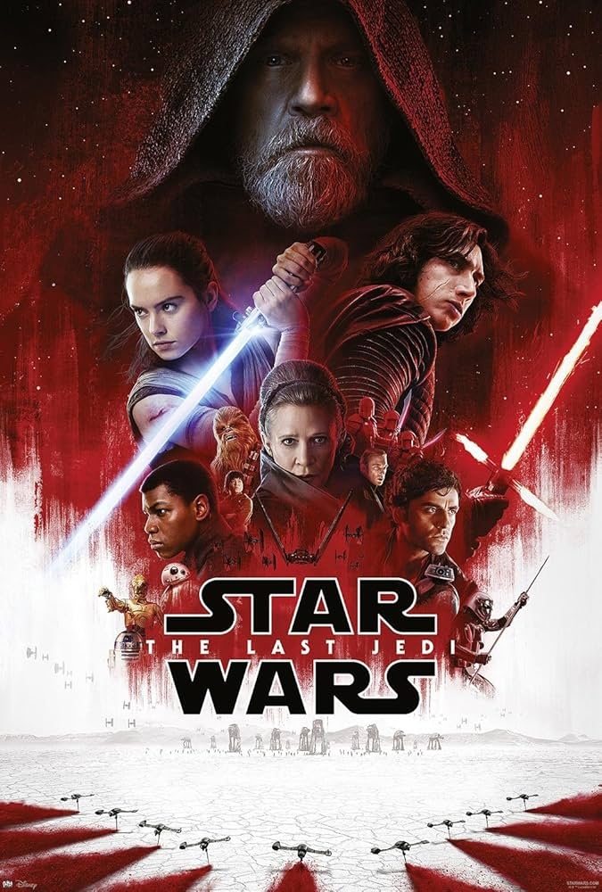
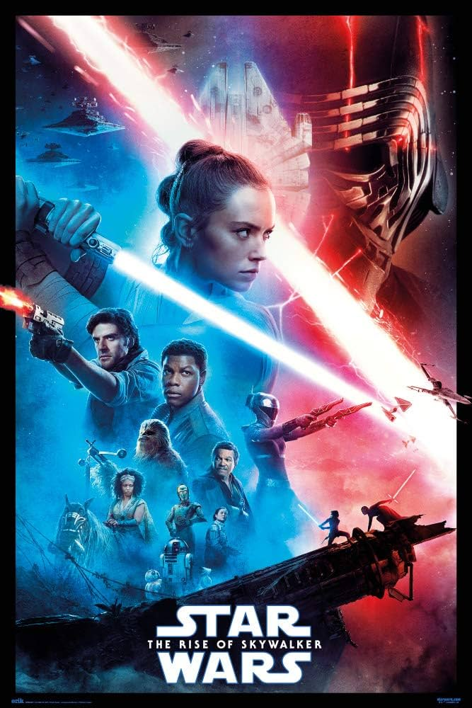

Star Wars es una épica saga de ciencia ficción creada por George Lucas. La historia se
desarrolla en una
galaxia
muy,
muy lejana y sigue las aventuras de personajes icónicos como Luke Skywalker, Han Solo, la Princesa Leia y
Darth
Vader. La lucha entre el bien y el mal, representada por la Alianza Rebelde y el Imperio Galáctico, es el
eje
central de esta fascinante narrativa que ha cautivado a millones de fans en todo el mundo desde su estreno
en
1977.
La saga de Star Wars se divide en tres trilogías principales: la trilogía original, la
trilogía de precuelas
y la trilogía de secuelas. La trilogía original, lanzada entre 1977 y 1983, sigue las aventuras de Luke
Skywalker y sus aliados en su lucha contra el Imperio Galáctico. La trilogía de precuelas, lanzada entre
1999 y 2005, explora los eventos que llevaron a la formación del Imperio y la caída de la República.
Finalmente, la trilogía de secuelas, lanzada entre 2015 y 2019, continúa la historia de la trilogía original
con nuevos personajes y desafíos.
La primera trilogía, conocida como la trilogía de precuelas, incluye los episodios I, II y III. Esta trilogía
comienza con "La Amenaza Fantasma" (Episodio I), donde se presenta a un joven Anakin Skywalker, un esclavo
con un talento excepcional para la Fuerza. La historia sigue a los Jedi Qui-Gon Jinn y Obi-Wan Kenobi
mientras descubren a Anakin y lo llevan ante el Consejo Jedi, creyendo que él es el Elegido destinado a
traer equilibrio a la Fuerza. A medida que la trilogía avanza, se exploran los orígenes de Darth Vader y el
ascenso del Emperador Palpatine.



La segunda trilogía, conocida como la trilogía original, incluye los episodios IV, V y VI. Esta trilogía
comienza con "Una Nueva Esperanza" (Episodio IV), donde se presenta a Luke Skywalker, un joven granjero que
descubre su conexión con la Fuerza y se une a la Alianza Rebelde para luchar contra el Imperio Galáctico. A
lo largo de la trilogía, Luke se entrena como Jedi bajo la tutela de Obi-Wan Kenobi y Yoda, y se enfrenta a
Darth Vader, quien resulta ser su padre, Anakin Skywalker. La trilogía culmina con "El Retorno del Jedi"
(Episodio VI), donde Luke y sus aliados logran derrotar al Emperador Palpatine y traer paz a la galaxia.



La tercera trilogía, conocida como la trilogía de secuelas, incluye los episodios VII, VIII y IX. Esta
trilogía comienza con "El Despertar de la Fuerza" (Episodio VII), donde se presenta a nuevos personajes como
Rey, Finn y Kylo Ren, mientras la Resistencia lucha contra la Primera Orden, una organización surgida de las
cenizas del Imperio Galáctico. A lo largo de la trilogía, Rey descubre su conexión con la Fuerza y busca a
Luke Skywalker para recibir entrenamiento Jedi. La trilogía culmina con "El Ascenso de Skywalker" (Episodio
IX), donde Rey y sus aliados enfrentan la amenaza final del Emperador Palpatine, quien ha regresado para
intentar recuperar el control de la galaxia.


